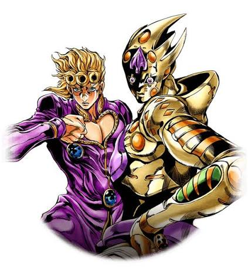
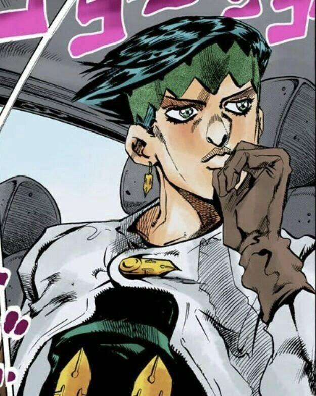

Un resumen de las 7 primeras partes de JJBA
Una descripcion sobre los personajes mas importantes de la obra

Una explicacion de las habilidades de los stands mas importantes de la obra

Una biografia acerca de Hirohiko Araki, creador de JJBA